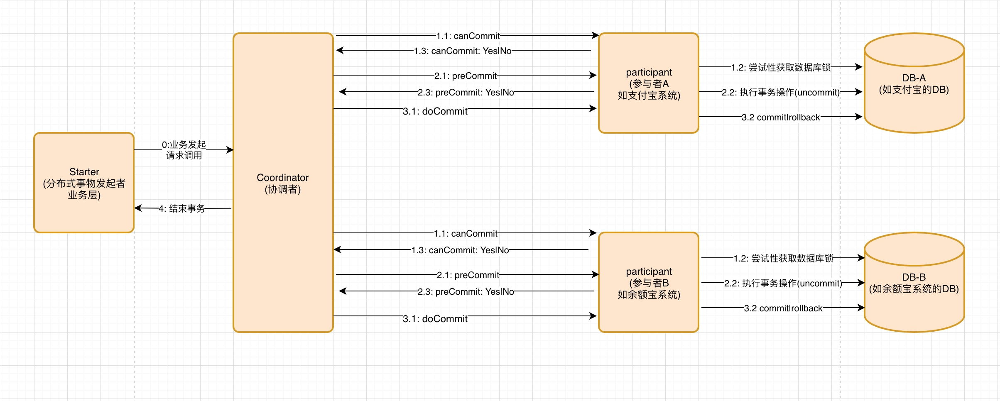

从ACID、FLP、CAP、BASE、到XA、2PC、3PC、TCC、Paxos、ZAB、RAFT
介绍分布式的一些原理 算法
分布式之【CAP理论、BASE理论 、FLP不可能定理】
FLP Impossibility的证明
跟我学分布式事务之2PC和3PC
分布式事务之深入理解什么是2PC、3PC及TCC协议？
Zookeeper系列（2）--2PC、3PC及其应用
Mysql的2pc应用
分布式事务之TCC事务
分布式事务与一致性算法Paxos & raft & zab
- ACID
- FLP不可能原理
- CAP
- BASE
- ACID和BASE的区别与联系
- XA
- 2PC Two-phaseCommit
- 3PC Three-phase commit
- TCC Try-Confirm-Cancel
- Paxos 少数服从多数
- ZAB Zookeeper Atomic Broadcast 原子广播协议
- Raft
ACID
原子性 Atomicity
保证事务中的所有操作全部执行或者全部不执行.
一致性 Consistency
保证事务操作之前和之后都是一致的.
隔离性 Isolation
多个事务并发的话，应该和多个事务串行执行效果一致.
事务的四个隔离级别：- 串行化：保证所有情况下都不会发生。【锁表】
- 可重复读：会出现幻读。【会锁定所读取的所有行】
- 读未提交：会出现脏读、幻读、不可重复读。【隔离级别最低，并发性能高】
- 读已提交(默认): 会出现幻读、不可重复读。【锁住正在读取的行】
总结：四个级别逐渐增强。每个级别分别解决一个问题，事务级别越高，性能越差，大多数环境下ReadCommit情况下就可以了。
脏读、幻读、不可重复读:- 脏读：一个事务读取了另一个事务
未提交的数据，而这个数据有可能被回滚。 - 幻读：事务不同独立执行时发生的一种现象。事务1读取指定Where条件的结果集，然后事务2插入一条新数据，而这条新数据刚好满足事务1所查询的条件，然后事务1再次查询时，看到了事务2新提交的数据。【幻读强调的是新增、删除。同样的条件，两次查询的记录数不同】
- 不可重复读：在一个事务范围内，两次查询得到不同的结果。【不可重复读强调的是修改。同样的条件，两次查询的记录值不同】
持久性 Durability
事务执行完之后，对于数据库的影响应该是持久的.
FLP不可能原理
理论
FLP给出了一个令人吃惊的结论：在异步通信场景，即使只有一个进程失败，也没有任何算法能保证非失败进程达到一致性！
原理证明
FLP Impossibility的证明
分布式之【CAP理论、BASE理论 、FLP不可能定理】
CAP
提出者
2000年7月，加州大学伯克利分校的Eric Brewer教授在ACM PODC会议上提出CAP猜想。2年后，麻省理工学院的Seth Gilbert和Nancy Lynch从理论上证明了CAP。之后，CAP理论正式成为分布式计算领域的公认定理。

理论 Consistency、Availability、Partition tolerance
Consistency:
- 任何操作都是原子的.发生在后面的事件可以看到前面发生事件的结果
- 注意：这里的一致性是指强一致性
Availability:
对于用户的每一个请求在有限时间内内返回结果.注意：
- "有限时间内": 是指 对于用户的请求，系统必须存在合理的响应时间，否则用户便会对系统感到失望
- "返回结果":是指 响应结果能够正常反映请求的处理结果，即成功或失败,而不是让用户困惑的结果
Partition tolerance:
系统在遇到任何网络故障时，仍能对外提供可用性和一致性服务，除非整个网络发生故障
说明 : 一个分布式系统无法同时满足以上三个需求，因此在实际运用时，我们就要抛弃其中一项.
理论应用
- 放弃P:放弃P就意味着放弃了扩展性.就是把所有数据放在一个分布式节点上.
- 放弃A:系统遇到故障时，在等待时间内系统无法对外提供正常服务，即不可用.
- 放弃C:放弃强一致性，而保持数据的最终一致性.引入时间窗口概念.
对于分布式系统而言，网络问题是必定会出现的异常情况,因为P是一个分布式系统必须面对和解决的问题.
所以往往要根据业务权衡C和A之间的选择.
BASE
提出者 eBay的架构师Dan Pritchett
eBay的架构师Dan Pritchett源于对大规模分布式系统的实践总结，在ACM上发表文章提出BASE理论，BASE理论是对CAP理论的延伸，核心思想是即使无法做到强一致性（Strong Consistency，CAP的一致性就是强一致性），但应用可以采用适合的方式达到最终一致性（Eventual Consitency）
理论 Basic Available、Soft State、Eventually Consistent
Basic Available : 基本可用
分布式系统在出现故障时，允许损失部分可用性，但是系统还是可用的.
Soft State : 弱状态
概念：和ACID强状态相对应，是指系统中允许存在的中间状态
不会影响系统的整体可用性Eventually Consistent : 最终一致性
概念：系统中的数据，经过同步之后最终能够达到一个一致的状态.
最终一致性的变种：
1 因果一致性：
2 读己之所写：
3 会话一致性：
4 单调读一致性：
5 单调写一致性：
BASE理论是对CAP中一致性和可用性的权衡总结.
ACID和BASE的区别与联系
ACID是传统数据库常用的设计理念，追求强一致性模型。BASE支持的是大型分布式系统，提出通过牺牲强一致性获得高可用性。
ACID和BASE代表了两种截然相反的设计哲学
在分布式系统设计的场景中，系统组件对一致性要求是不同的，因此ACID和BASE又会结合使用
XA
背景
分布式一致性回顾
在分布式系统中，为了保证数据的高可用，通常，我们会将数据保留多个副本(replica)，这些副本会放置在不同的物理的机器上。为了对用户提供正确的增\删\改\差等语义，我们需要保证这些放置在不同物理机器上的副本是一致的。
为了解决这种分布式一致性问题，前人在性能和数据一致性的反反复复权衡过程中总结了许多典型的协议和算法。其中比较著名的有二阶提交协议（Two Phase Commitment Protocol）、三阶提交协议（Two Phase Commitment Protocol）和Paxos算法
分布式事务
分布式事务是指会涉及到操作多个数据库的事务。其实就是将对同一库事务的概念扩大到了对多个库的事务。目的是为了保证分布式系统中的数据一致性。分布式事务处理的关键是必须有一种方法可以知道事务在任何地方所做的所有动作，提交或回滚事务的决定必须产生统一的结果（全部提交或全部回滚）
在分布式系统中，各个节点之间在物理上相互独立，通过网络进行沟通和协调。由于存在事务机制，可以保证每个独立节点上的数据操作可以满足ACID。但是，相互独立的节点之间无法准确的知道其他节点中的事务执行情况。所以从理论上讲，两台机器理论上无法达到一致的状态。如果想让分布式部署的多台机器中的数据保持一致性，那么就要保证在所有节点的数据写操作，要不全部都执行，要么全部的都不执行。但是，一台机器在执行本地事务的时候无法知道其他机器中的本地事务的执行结果。所以他也就不知道本次事务到底应该commit还是 roolback。所以，常规的解决办法就是引入一个“协调者”的组件来统一调度所有分布式节点的执行。
XA规范
X/Open 组织（即现在的 Open Group ）定义了分布式事务处理模型。 X/Open DTP 模型（ 1994 ）包括应用程序（ AP ）、事务管理器（ TM ）、资源管理器（ RM ）、通信资源管理器（ CRM ）四部分。一般，常见的事务管理器（ TM ）是交易中间件，常见的资源管理器（ RM ）是数据库，常见的通信资源管理器（ CRM ）是消息中间件。 通常把一个数据库内部的事务处理，如对多个表的操作，作为本地事务看待。数据库的事务处理对象是本地事务，而分布式事务处理的对象是全局事务。 所谓全局事务，是指分布式事务处理环境中，多个数据库可能需要共同完成一个工作，这个工作即是一个全局事务，例如，一个事务中可能更新几个不同的数据库。对数据库的操作发生在系统的各处但必须全部被提交或回滚。此时一个数据库对自己内部所做操作的提交不仅依赖本身操作是否成功，还要依赖与全局事务相关的其它数据库的操作是否成功，如果任一数据库的任一操作失败，则参与此事务的所有数据库所做的所有操作都必须回滚。 一般情况下，某一数据库无法知道其它数据库在做什么，因此，在一个 DTP 环境中，交易中间件是必需的，由它通知和协调相关数据库的提交或回滚。而一个数据库只将其自己所做的操作（可恢复）影射到全局事务中。
XA 就是 X/Open DTP 定义的交易中间件与数据库之间的接口规范（即接口函数），交易中间件用它来通知数据库事务的开始、结束以及提交、回滚等。 XA 接口函数由数据库厂商提供。
二阶提交协议和三阶提交协议就是根据这一思想衍生出来的。可以说二阶段提交其实就是实现XA分布式事务的关键(确切地说：两阶段提交主要保证了分布式事务的原子性：即所有结点要么全做要么全不做)
2PC Two-phaseCommit
二阶段提交(Two-phaseCommit)是指，在计算机网络以及数据库领域内，为了使基于分布式系统架构下的所有节点在进行事务提交时保持一致性而设计的一种算法(Algorithm)。通常，二阶段提交也被称为是一种协议(Protocol))。在分布式系统中，每个节点虽然可以知晓自己的操作时成功或者失败，却无法知道其他节点的操作的成功或失败。当一个事务跨越多个节点时，为了保持事务的ACID特性，需要引入一个作为协调者的组件来统一掌控所有节点(称作参与者)的操作结果并最终指示这些节点是否要把操作结果进行真正的提交(比如将更新后的数据写入磁盘等等)。因此，二阶段提交的算法思路可以概括为：参与者将操作成败通知协调者，再由协调者根据所有参与者的反馈情报决定各参与者是否要提交操作还是中止操作。
图例
图片有 draw.io 软件所画，源文件: 2PC.xml
第一阶段 请求/表决阶段(Prepare/Vote Request)
分布式事务的发起方在向分布式事务协调者（Coordinator）发送请求时，Coordinator首先会分别向参与者（Participant）节点A、参与这节点（Participant）节点B分别发送事务预处理请求，称之为Prepare，有些资料也叫"Vote Request"
将第一阶段分为三个步骤：
- Coordinator向所有Participant询问是否可以执行提交操作(vote)，并开始等待各Participant的响应。
- Participant锁定资源(获取锁)，执行询问发起为止的所有事务操作，并将Undo信息和Redo信息写入日志。（注意：若成功这里其实每个Participant已经执行了事务操作）
- 各Participant响应协调者节点发起的询问。如果Participant的事务操作实际执行成功，则它返回一个”Ready”消息；如果Participant的事务操作实际执行失败，则它返回一个”Abort”消息。
第二阶段 提交阶段
如果Coordinator收到了Participant的Abort消息或者超时，直接给每个参与者发送回滚(Rollback)消息；
否则，发送提交(Commit)消息；
将第二阶段分为四个步骤
- Coordinator向所有Participant发出 [正式提交(Commit) | 回滚(Rollback)] 的请求
- Participant [正式完成操作|利用undo信息执行回滚] ，并释放在整个事务期间内占用的资源。
- Participant向Coordinator发送 [完成|回滚完成] 消息
- Coordinator收到Participant反馈的 [完成|回滚完成] 消息后，[完成|取消] 事务。
不管最后结果如何，第二阶段都会结束当前事务
缺点
- 同步阻塞问题：执行过程中，所有Participant都是事务阻塞型的。当Participant占有公共资源时，其他第三方节点访问公共资源不得不处于阻塞状态
- 单点故障：由于Coordinator的重要性，一旦Coordinator发生故障。Participant会一直阻塞下去。尤其在第二阶段，Coordinator发生故障，那么所有的Participant还都处于锁定事务资源的状态中，而无法继续完成事务操作。（如果是Coordinator挂掉，可以重新选举一个Coordinator，但是无法解决因为协调者宕机导致的Participant处于阻塞状态的问题）
- 数据不一致：在二阶段提交的阶段二中，当Coordinator向Participant发送commit请求之后，发生了局部网络异常或者在发送commit请求过程中协调者发生了故障，这回导致只有一部分Participant接受到了commit请求。而在这部分Participant接到commit请求之后就会执行commit操作。但是其他部分未接到commit请求的机器则无法执行事务提交。于是整个分布式系统便出现了数据部一致性的现象
- 二阶段无法解决的问题：Coordinator在发出commit消息之后宕机，而唯一接收到这条消息的参与者同时也宕机了。那么即使通过选举协议产生了新的Coordinator，这条事务的状态也是不确定的，没人知道事务是否被已经提交
3PC Three-phase commit
图例
图片有 draw.io 软件所画，源文件: 3PC.xml

三阶段提交（Three-phase commit）是二阶段提交（2PC）的改进版本。
与两阶段提交不同的是，三阶段提交有两个改动点
- 引入超时机制。同时在协调者和参与者中都引入超时机制
- 在第一阶段和第二阶段中插入一个准备阶段，共有 CanCommit、PreCommit、DoCommit 这三个阶段，保证了在最后提交阶段之前各参与节点的状态是一致的。
CanCommit阶段
3PC的CanCommit阶段其实和2PC的准备阶段很像。协调者向参与者发送commit请求，参与者如果可以提交就返回Yes响应，否则返回No响应
- 事务询问协调者向参与者发送CanCommit请求。询问是否可以执行事务提交操作。然后开始等待参与者的响应
- 响应反馈参与者接到CanCommit请求之后，正常情况下，如果其自身认为可以顺利执行事务，则返回Yes响应，并进入预备状态。否则反馈No
PreCommit阶段
协调者根据参与者的反应情况来决定是否可以记性事务的PreCommit操作。根据响应情况，有以下两种可能。
假如协调者从所有的参与者获得的反馈都是Yes响应，那么就会执行事务的预执行
- 发送预提交请求 协调者向参与者发送PreCommit请求，并进入Prepared阶段
- 事务预提交 参与者接收到PreCommit请求后，会执行事务操作，并将undo和redo信息记录到事务日志中
- 响应反馈 如果参与者成功的执行了事务操作，则返回ACK响应，同时开始等待最终指令
假如有任何一个参与者向协调者发送了No响应，或者等待超时之后，协调者都没有接到参与者的响应，那么就执行事务的中断。
- 发送中断请求 协调者向所有参与者发送abort请求
- 中断事务 参与者收到来自协调者的abort请求之后（或超时之后，仍未收到协调者的请求），执行事务的中断
doCommit阶段
该阶段进行真正的事务提交，也可以分为以下两种情况。
执行提交
- 发送提交请求 协调接收到参与者发送的ACK响应，那么他将从预提交状态进入到提交状态。并向所有参与者发送doCommit请求
- 事务提交 参与者接收到doCommit请求之后，执行正式的事务提交。并在完成事务提交之后释放所有事务资源
- 响应反馈 事务提交完之后，向协调者发送Ack响应
- 完成事务 协调者接收到所有参与者的ack响应之后，完成事务
中断事务 协调者没有接收到参与者发送的ACK响应（可能是接受者发送的不是ACK响应，也可能响应超时），那么就会执行中断事务
- 发送中断请求 协调者向所有参与者发送abort请求
- 事务回滚 参与者接收到abort请求之后，利用其在阶段二记录的undo信息来执行事务的回滚操作，并在完成回滚之后释放所有的事务资源
- 反馈结果 参与者完成事务回滚之后，向协调者发送ACK消息
- 中断事务 协调者接收到参与者反馈的ACK消息之后，执行事务的中断
缺点
3PC依然没有完全解决数据不一致的问题
2PC和3PC区别
3PC对于协调者（Coordinator）和参与者（Partcipant）都设置了超时时间，而2PC只有协调者才拥有超时机制
好处: 主要是避免了参与者在长时间无法与协调者节点通讯（协调者挂掉了）的情况下，无法释放资源的问题，因为参与者自身拥有超时机制会在超时后，自动进行本地commit从而进行释放资源。而这种机制也侧面降低了整个事务的阻塞时间和范围。
通过CanCommit、PreCommit、DoCommit三个阶段的设计
好处: 相较于2PC而言，多设置了一个缓冲阶段保证了在最后提交阶段之前各参与节点的状态是一致的
2PC 3PC 的应用
大多数的关系型数据库来说，解决分布式事务的方法就是利用两阶段提交2pc，其过程就是我们上边介绍的2PC的过程。可参考：Mysql的2pc应用 。主要涉及mysql的几个日志： mysql日志文件 ，另外还有在事务过程中的redo_log undo redo undo。
TCC Try-Confirm-Cancel
提出者
在08年的软件开发2.0技术大会上，支付宝程立在PPT大规模SOA系统中的分布事务处理，提出TCC概念。 在网络上搜索分布式事务相关的博客，基本都会提及这个PPT，目前很多分布式事务开源项目也都是基于TCC的思想实现
理论
TCC（Try-Confirm-Cancel）又称补偿事务。其核心思想是："针对每个操作都要注册一个与其对应的确认和补偿（撤销操作）"。它分为三个操作：
Try阶段：主要是对业务系统做检测及资源预留
Confirm阶段：确认执行业务操作
Cancel阶段：取消执行业务操作
图例
对比2PC
TCC事务处理流程和 2PC 二阶段提交类似，不过 2PC通常都是在跨库的DB层面，而TCC本质就是一个应用层面的2PC。
优缺点
- 优点：让应用自己定义数据库操作的粒度，使得降低锁冲突、提高吞吐量成为可能
缺点：
- 对应用的侵入性强。业务逻辑的每个分支都需要实现try、confirm、cancel三个操作，应用侵入性较强，改造成本高
- 实现难度较大。需要按照网络状态、系统故障等不同的失败原因实现不同的回滚策略。为了满足一致性的要求，confirm和cancel接口必须实现幂等性
幂等性: 一次和多次请求对某一资源对于其资源本身应具有同样的结果
Paxos 少数服从多数
ZAB Zookeeper Atomic Broadcast 原子广播协议
Raft
paxos 算法与 raft 算法的差异
相同点
- 得到大多数的赞成，这个 entries 就会定下来，最终所有节点都会赞成
区别：
- raft强调是唯一leader的协议，此leader至高无上
- raft：新选举出来的leader拥有全部提交的日志，而 paxos 需要额外的流程从其他节点获取已经被提交的日志，它允许日志有空洞